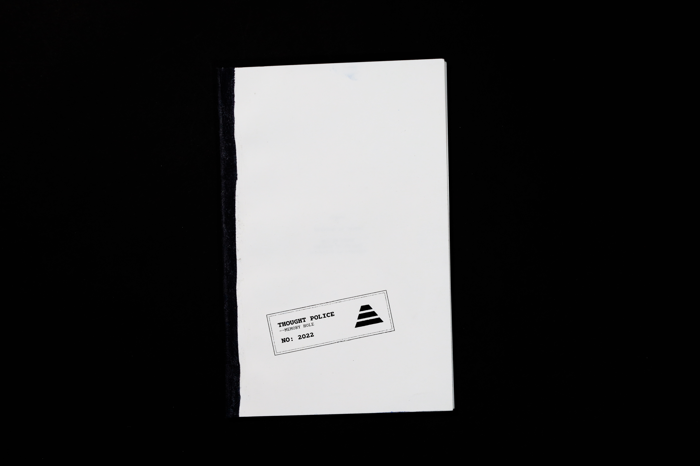

—yigit toprak
Graphic Designer
i. Projects
- Images of Body and Story
- 1984 (Obliteration)
- Emperor Display
- Wood Type
- Dialogue With The Machine
- Emperor (WEB)
- Escape Route
- Factory Reset
- All About Process
ii. Archives
iii. Info & Contact





LETTER OF — — —
My name is — — —, like it matters, will matter or did matter. I do not know why I am writing this,
since I am not existing, will not exist and did not exist. I am a designer at the Ministry of Truth.
My job is to design The Times newspaper.
On a Thursday of summer. This book called 1984 by a writer that does not exist, will not exist and
did not exist, George Orwell (Eric Arthur Blair) appeared on my desk at work. I did not question it
since I did not know how to question. I thought it was a document put on my desk for an upcoming
propaganda news by The Ministry of Love. It did not look like anything I have ever seen before,
because of that I thought I would need more time understanding it and delayed it to work on it after
my job. I opened the book for the first time. Its texture and little words with inconsistent lines
coming out of its corners made me think it was written in another language, yet I was still able to
read it and understand certain lines of it. There were a lot of words that were not in the Newspeak
so I decided to write it down with my typewriter at home to try to understand it better. As I was
reading it I started understanding it more and realised the book was about the lies that I was
living in. I panicked, stopped reading it and put the book inside the drawer next to my bed and
forgot about it.
At the end of the hate week, I went back home to grab my last pack of Victory Cigarettes before
heading to the Chestnut Tree Cafe to drink a few glasses of throat burning gin. As I was searching
for the cigarettes I opened the drawer and the book was there. A sudden panic and curiosity rushed
from my head to toes. My legs felt numb. I forgot about my plans to go to the Chestnut Tree Cafe and
put the book inside my dirty cloth bag with a pen I got from work, my Ingsoc Ministry of Truth
designer journal, Victory Cigarettes and started to walk, having no idea where I was going. I just
wanted to get as far away from the telescreens as I could, thinking I was about to commit a
thoughtcrime (which I did commit). I walked through the sewer smelling streets trying not to step on
the rats that suddenly appeared from the little holes. After some time I found myself in the middle
of a field with a creator which was probably opened by an explosion. I sat in the shade of the
single tree that was escaping from the heat of the summer (summers were getting hotter and hotter).
I lit a Victory Cigarette and started taking notes as I read the mysterious book. The things I read…
created a gap in my mind. I remember breathing rapidly and my hands sweating as I tried to write
down what was going on in my mind. The journal kept slipping out of my lap but I still kept touching
the paper with the pen. I was looking at the book but still writing and doing whatever I was doing
to my journal. I wanted to scream but I could not because Big Brother was watching even though I was
in the middle of an empty field. I kept breathing rapidly until I smelled fire. The cigarette
dropped from my lips to the dry grass which was smoking. I quickly put out the small fire wishing
that no one noticed. I packed and started walking back home quickly in the shock of what I had just
read. The lies, and the war and the letters, and the sentences, and the paper, and the cover… I
started breaking the grid… literally.
In the Ministry of Truth the only design system we use is the grid of war, freedom and ignorance
which is a three column structure that we set the whole newspaper on. The next day I sat in front of
my desk typing as I read, but I was not using the war, freedom and ignorance grid. I was putting the
page in weird angles on the type writer and writing what I was reading or did read. Why? Because I
could. I felt rebellious, like a dirty rat which was gnawing the bars of its cage. I felt freedom.
Next week, I got the duty to design the news about the party’s new invention of the aeroplane.
Knowing I was designing a lie, I could not do work that day at the ministry. I sat in front of my
desk, typing only the header: INVENTION OF THE AEROPLANE. I left work and decided to finish the rest
at home. Sat in front of my typewriter with my journal and the pen on the desk. My vision got blurry
and I started breathing rapidly again. As I was writing, drawing and scribbling unconsciously. I hit
my elbow to the side of the desk which got me back to reality. I stopped immediately and tried going
to sleep for the rest of the night. Next day I brought the book with me to work. Using the renderer
(the machine which helped us scan and print images) I have created quick prints in the upper levels
of the ministry where the telescreen was broken.
I felt satisfied and relieved. I was satisfied and relieved because I figured it out. It was the
thought police. They were the ones who put 1984 on my desk, they were the ones who hid my cigarettes
that day so I would find the book again, they were the ones who put the rates inside the holes, they
were the ones who gave me the duty to design about the aeroplane, they were the ones who broke that
telescreen on the upper level, they were th
(the letter ends mid sentence indicating somehing
happened to — — —)